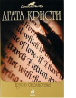

Труп в библиотеке

Мисс Марпл - кто она? Тихая старушка - "божий одуванчик" - или гений сыска? Скорее последнее, ведь лишь она способна разобраться, откуда в библиотеке полковника появился труп ("Труп в библиотеке"). Лишь ее невероятная логика может помочь раскрыть хитроумнейшую уловку преступников ("Фокус с зеркалами"). Лишь ей, даже во время отдыха на небольшом Карибском острове, дано разгадать цепь смертей, на первый взгляд кажущихся случайными, и изобличить преступника ("Карибская тайна").